Paulina y VikD protagonizan una noche épica con capas rojas, luces cálidas y mucha actitud.
Paulina detiene el tiempo en el desierto mientras el sol se rinde tras ella.
Two virtual fashion characters dressed as iconic heroes walk confidently down a glowing catwalk in a neon-lit club. Captured at eye-level with a 50mm f/1.4 lens for natural depth and intimacy. Ambient red lighting enhances atmosphere, while the seated audience frames the moment. Cinematic, high-contrast, vibrant tones. Studio-grade AI rendering.
Model standing in front of a vintage convertible car in a desert at golden hour. Shot with a 35mm lens at chest level to capture symmetry and sunset depth. Warm tones and directional light enhance the mood. Wind blowing through hair, red leather jacket, and dry brush foreground for cinematic energy. Fashion editorial with natural landscape fusion.